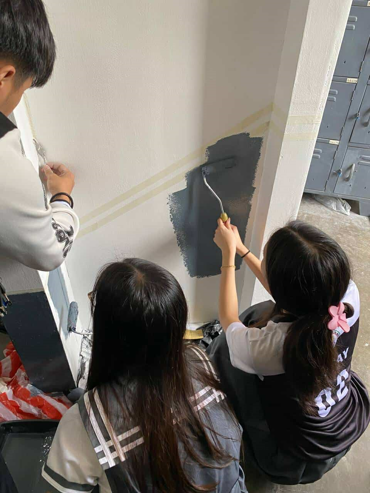

For our Investigatory Project (IP), we worked on polishing and painting our INEU project. At first, it sounded simple, but as we got into it, we realized there was a lot more detail and effort involved than we expected.
Polishing wasn’t just a quick process—it required time, focus, and a whole lot of patience to make sure everything looked smooth and clean. There were moments when it felt like the sanding and refining would never end, but we pushed through. It was about making the surface perfect and ready for the final touches.
The painting phase was a different kind of challenge. It was both fun and stressful—we had to be extra careful to avoid smudges, keep our colors neat, and really pay attention to details. There was a lot of double-checking and redoing small parts to make sure everything looked just right.
When we finally finished, the project looked amazing—clean, polished, and proudly ours. It gave us a strong sense of accomplishment, not just because of how it looked, but because we knew how much work went into it. More importantly, we learned that the final touches—like polishing and painting—are just as important as the main idea. They bring the whole project together and show how much care and effort we put into every detail.